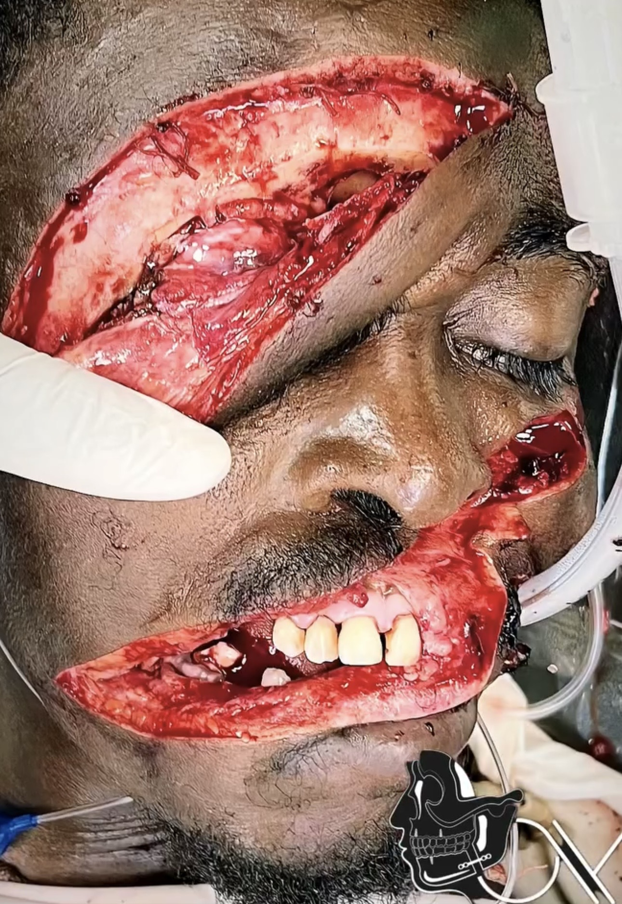
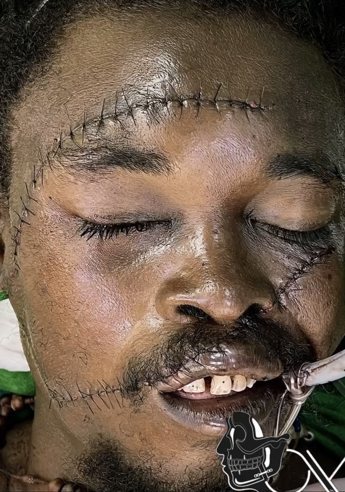

Caso 01
Reconstrucción maxilofacial
Seguimiento clínico organizado por etapas del tratamiento, desde el diagnóstico hasta el control postoperatorio.


Desplázate horizontalmente para ver más fotos del mismo caso Desliza las fotos hacia la izquierda